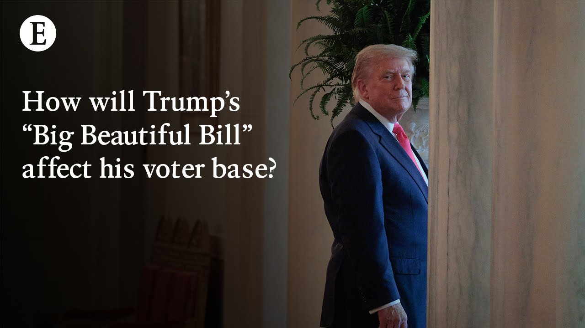

【经济学人：特朗普的“大美丽法案”对美国意味着什么？】
Summary: The discussion explores how the filibuster and reconciliation processes have distorted traditional legislating, leading to massive, poorly understood bills that lack accountability and harm public trust in Congress.
摘要： 讨论探讨了阻挠议事和预算调解程序如何扭曲传统立法，导致庞大且难以理解的法案，缺乏问责制，并损害公众对国会的信任。

⏱️ Estimated Reading Time: 19 min
📚 四级生词 📚 六级生词 📚 雅思生词 📚 托福生词 📚 专八生词 📚 SAT生词 📚 考研生词 📚 GRE生词 📚 高考生词 📚 其它生词生词
What do you think about the idea that traditional legislating is dead?
你对传统立法已死的看法是什么？
I mean, never say never, right?
我是说，永远别说永远，对吧？
We don't know what Congress might do.
我们不知道国会可能会做什么。
But do you think that reconciliation is just how this body of government will operate from here on out?
但你认为预算调解程序就是政府机构从现在开始运作的方式吗？
I think all of this is the kind of perversion that is caused by the filibuster.
我认为这一切都是阻挠议事导致的扭曲。
And I think that people are very keen to call for the filibuster to go when Democrats are in charge.
我认为人们非常热衷于在民主党掌权时呼吁废除阻挠议事。
But I think actually this is a demonstration why it should go even when Republicans are in charge because what the filibuster does is it says that you can't pass legislation without 60 votes and in the modern polarized day you cannot get 60 votes.
但我认为这实际上证明了为什么即使在共和党掌权时也应该废除它，因为阻挠议事意味着你需要60票才能通过立法，而在现代两极分化的时代，你无法获得60票。
Barack Obama I think was the peak and even then and even then by the way when the bill you know there were corrections that were made to the bill to the ACA after it was passed and those had to pass through reconciliation because Ted Kennedy had died.
我认为巴拉克·奥巴马是巅峰，即便如此，当法案通过后，对《平价医疗法案》的修正也不得不通过预算调解程序，因为泰德·肯尼迪去世了。
Yeah.
是的。
Yeah.
是的。
Exactly.
没错。
And then you had Scott Brown underwear model coming in.
然后斯科特·布朗（内衣模特）来了。
Exactly.
没错。
And Exactly.
而且没错。
And so they had 59.
所以他们有59票。
And so then 59 senators could not pass these tweaks that were needed to the ACA.
因此，59名参议员无法通过这些对《平价医疗法案》必要的调整。
But uh what happens then is that you have to move through this reconciliation procedure which means that the bill has to be mostly budgetary.
但接下来你必须通过预算调解程序，这意味着法案必须主要是预算相关的。
It's not supposed to increase deficits outside of the 10-year window.
它不应该在10年窗口期外增加赤字。
And instead what you have is an incentive to cram everything into this bill because you only get one reconciliation bill a fiscal year.
相反，你有动力把所有东西塞进这个法案，因为你一个财年只能有一个预算调解法案。
And you uh don't debate the details of it.
而且你不会辩论它的细节。
You don't have separate pieces of legislation.
你没有单独的法案。
And so I I think that, you know, Republicans should if you know they want a majority of Congress, they want the majority, they want the White House, they should be able to pass the immigration bill that they want, they should be able to pass the Medicaid bill that they want, they should be able to pass the tax bill that they want.
所以我认为，如果共和党想要国会多数席位，想要白宫，他们应该能够通过他们想要的移民法案、医疗补助法案和税收法案。
What we instead have is a kind of collapse of deliberation because all of this stuff is sutured into one mega bill that no individual Republican legislator is able to read or understand.
而我们实际看到的是审议的崩溃，因为所有这些内容都被缝合进一个庞大的法案，没有一个共和党立法者能够阅读或理解。
And it's then passed.
然后它就被通过了。
And it's not just the Republicans.
而且不仅仅是共和党。
The Democrats do this as well.
民主党也这样做。
That's what happened with the American Rescue Plan, the Inflation Reduction Act.
这就是《美国救援计划》和《通胀削减法案》的情况。
I mean, people don't know what's being voted on.
我是说，人们不知道他们在投票支持什么。
The American people don't know.
美国人民不知道。
The cong the members of Congress don't know.
国会议员不知道。
There's a There's a problem with how it works at the moment democratically because you can't pass legislation outside this bizarre process.
目前的民主运作方式存在问题，因为你无法在这种奇怪的程序之外通过立法。
As a voter, it's quite hard to know who to blame for stuff that goes wrong because you elect people, you hand the Republicans, in this case a majority in both houses, and then they can't pass the legislation they want, and then as a voter, you're cross about that.
作为选民，很难知道该责怪谁，因为你选举的人，在这种情况下是共和党在两院占多数，但他们无法通过他们想要的立法，作为选民，你会对此感到愤怒。
Who do you take that out on?
你该向谁发泄？
I think that's so right because there's a complete breakdown in accountability.
我认为这非常正确，因为问责制完全崩溃了。
If you hire someone to represent you, they go in and then they're passing legislation that they don't even know what it I mean, that's just so weird.
如果你雇人来代表你，他们进去后通过的法案连他们自己都不知道是什么，这太奇怪了。
It's worth saying clearly how totally bonkers that is.
值得清楚地说明这有多么疯狂。
And I think as a result you get to some of the compounding effects of declining trust in institutions in American life but Congress in particular if you look at those uh polling and it's been pretty steady over the years in which bodied government is always the most sustained and it is very clearly Congress and I think that's for a reason.
我认为结果是，美国生活中对机构信任下降的复合效应，尤其是国会，如果你看看那些民调，多年来一直很稳定，国会始终是最不受信任的政府机构，我认为这是有原因的。
Just to add Just to add to that we've talked so far mainly about the tax provisions and the healthcare provisions but it is the everything bill.
补充一下，我们到目前为止主要讨论了税收和医疗条款，但这是一个“无所不包”的法案。
I mean there's a lot of energy policy in there.
我是说里面有很多能源政策。
There's defense spending.
有国防开支。
There's immigration enforcement policy.
有移民执法政策。
There's, you know, there are attempts to regulate or prevent the regulation of AI.
你知道，还有试图监管或阻止人工智能监管的内容。
It is everything to do with governing in America crammed into one bill and then on a straight up or down vote with the president saying, "If you vote against this, I'm going to primary you."
所有与美国治理相关的内容都被塞进一个法案，然后进行简单的赞成或反对投票，总统还说：“如果你投反对票，我会在初选中挑战你。”
Yeah, Yeah, it's bonkers.
是的，是的，这太疯狂了。
Let's get to the politics Let's get to the politics of this.
让我们谈谈政治，谈谈这件事的政治影响。
Do you think that the people who voted for Donald Trump will be enthusiastic about the effects of this bill on the US economy?
你认为投票给唐纳德·特朗普的人会热情支持这个法案对美国经济的影响吗？
I think if they knew the details, which a lot of the American public doesn't, I don't know that they would be.
我认为如果他们知道细节（很多美国公众不知道），我不确定他们会支持。
I think that the bill we know is fairly regressive because uh you know things like the increase in the state and local tax deduction from $10,000 to 40,000.
我认为这个法案相当倒退，因为你知道，比如州和地方税抵扣从1万美元增加到4万美元。
The uh increase in the amount of uh in a state you can leave that's exempt from tax up to I think 30 million uh that's not benefiting uh you know salt of the earth Americans.
还有州内免税额度增加到大约3000万美元，这并不会惠及普通美国人。
That's benefiting the rarified elite.
这惠及的是精英阶层。
We see that uh also with the Medicaid cuts.
我们在医疗补助削减中也看到了这一点。
We haven't talked about the food stamps cuts, but those also uh will hurt those at the bottom of the income distribution.
我们还没谈到食品券削减，但这些也会伤害收入最低的人群。
So, all in all, it's a regressive uh transfer.
所以总的来说，这是一个倒退的财富转移。
It also adds trillions to the deficits over the next 10 years.
它还会在未来10年增加数万亿美元的赤字。
Um, which is ostensibly not what Donald Trump was elected to do.
嗯，这表面上不是唐纳德·特朗普当选后该做的事。
Um, so I I think in a lot of ways they wouldn't be happy with it.
所以我认为在很多方面他们不会对此满意。
I don't think that politics kind of hinges on kind of material changes in one's life.
我不认为政治取决于一个人生活中的物质变化。
I think that they matter more these days about culture.
我认为如今文化问题更重要。
Um, so I don't know that it will change patterns of voting in the same way that the Affordable Care Act showered and the Inflation Reduction Act showered a lot of its benefits on red states in this country and you didn't really see that much of a shift as a result.
所以我不确定它会像《平价医疗法案》和《通胀削减法案》那样改变投票模式，这两项法案的很多好处都流向了红州，但你并没有看到因此产生太大变化。
Charlotte, one of the aspects of the bill that we haven't talked about is there's a lot of energy policy in there.
夏洛特，我们还没讨论这个法案的一个方面是里面有很多能源政策。
Inflation reduction act tax credits uh ended early other pieces of law makingaking that will change particularly the deployment of renewable energy in America.
《通胀削减法案》的税收抵免提前结束，其他立法将改变美国可再生能源的部署。
I don't think there's a lens through which you can view Donald Trump's energy provisions that make sense in any way unless energy is just a culture war issue rather than an economic issue because the policies in there that have to do with uh deploying wind energy, solar energy, he wants to phase down those tax credits, those have a disproportionate benefit to Republican states.
我认为除非能源只是一个文化战争问题而非经济问题，否则你无法以任何合理的视角看待唐纳德·特朗普的能源条款，因为那些与风能、太阳能部署相关的政策，他想要逐步取消税收抵免，而这些抵免对共和党州 disproportionately 有利。
you know, that's where a lot of that money has gone and would continue to go.
你知道，很多钱都流向了那里，而且会继续流向那里。
So, he's interested in, you know, being a prostate as a cultural issue and he's interested in bashing the Green New Deal, as he calls it, even though there never was such a thing as a culture issue.
所以他对作为文化问题的立场感兴趣，他喜欢抨击他所谓的“绿色新政”，尽管这从来不是一个文化问题。
It's not really one that makes economic sense.
这并没有经济意义。
Adris, one of the things you wrote in this week's briefing is that Donald Trump has remade American politics, remade the Republican party in his image, but on the basis of this piece of legislation and the 2017 tax cuts and jobs act, he hasn't or he isn't remaking the economy to quite the same degree.
阿德里斯，你在本周简报中写道，唐纳德·特朗普重塑了美国政治，按照他的形象重塑了共和党，但基于这项立法和2017年的《减税与就业法案》，他并没有以同样的程度重塑经济。
That's right.
没错。
I think that the reason for that is that Trump is really not interested in legislating and because that requires compromise, that requires deliberation, uh, policy, detail, all of the things that Trump has not been interested in.
我认为原因是特朗普对立法真的不感兴趣，因为这需要妥协、审议、政策和细节，所有这些特朗普都不感兴趣。
And so in 2017, he turned that over to Paul Ryan and Mitch McConnell to basically do whatever they wanted.
所以在2017年，他把它交给了保罗·瑞安和米奇·麦康奈尔，让他们基本上做他们想做的事。
And he would sell whatever resulted as the greatest bill ever.
然后他会把任何结果宣传为有史以来最伟大的法案。
And he has indeed sold this bill as the greatest bill ever.
他确实把这个法案宣传为有史以来最伟大的法案。
Uh but it is an extension of the Paul Ryan vision of the world.
但这是保罗·瑞安世界观的延伸。
Uh these lower taxes, uh Medicaid cuts, food stamps cuts, all of those are very much in line with old school Republicanism.
这些减税、医疗补助削减、食品券削减，都非常符合老派共和党主义。
And you know the I'll I'll just pause you there because Paul Ryan cared more about the deficit than these folks do, didn't he?
你知道，我要在这里打断你，因为保罗·瑞安比这些人更关心赤字，不是吗？
Or do you think not?
或者你不这么认为？
He said he did.
他说他关心。
He said he did, but
他说他关心，但是
He said he did.
他说他关心。
He said he did, but then when he was in power, he didn't.
他说他关心，但掌权后并没有。
Fair enough.
有道理。
But the TCJ added $2
但《减税与就业法案》增加了2万亿美元
But the TCJ added $2 trillion to to deficits.
但《减税与就业法案》增加了2万亿美元赤字。
and the extension of the TCJ which was very much intended by the by the fact that they sunset it this year will add 4 trillion more.
而《减税与就业法案》的延期（他们今年让它到期是有意为之）将再增加4万亿美元。
I think Paul Ryan wasn't I think Paul Ryan wasn't transparently a clown.
我认为保罗·瑞安并不是一个明显的小丑。
He was a serious wonky person in contrast to now.
与现在相比，他是一个严肃的技术官僚。
I think the end result to your point is, you know, he did expand the debt, but it is but it is all timelmited to his term.
我认为最终结果是，他确实扩大了债务，但都仅限于他的任期。
And maybe the idea is that we repeat the trick and, you know, at the end of this year, at the end of his term, you know, a future Congress, future president feels compelled to extend, for example, the newborn uh bonus for for that long.
也许想法是我们重复这个把戏，在今年年底，在他任期结束时，未来的国会、未来的总统会感到不得不延长，比如新生儿奖金那么长时间。
But really, Trump is enamored with the sweeping use of executive power.
但实际上，特朗普热衷于广泛使用行政权力。
That's what he cares about.
这才是他关心的。
That's what he likes psychologically.
这是他在心理上喜欢的。
He likes being able to impose things immediately to have people have to uh uh pray for relief to him personally that he has the ability to decide and that's why he has chosen to run economic policy through uh executive orders on tariffs for example totally circumventing Congress that the problem with that is that you know he has now given up his chance to make a permanent mark on American economics in the way that Bill Clinton did through welfare reform, Obama did through the ACA, uh the way Lyndon Johnson did through the Great Society, FDR, you can go down the list, or even Reagan, and instead he's opted for these uh tariff increases and these cuts to the federal government that are instituted by the pen, which means that they can be very easily swept away by a future president.
他喜欢能够立即实施事情，让人们不得不向他个人祈求救济，他有决定权，这就是为什么他选择通过行政命令（比如关税）来运行经济政策，完全绕过国会。问题在于，他现在放弃了像比尔·克林顿通过福利改革、奥巴马通过《平价医疗法案》、林登·约翰逊通过“伟大社会”、罗斯福甚至里根那样在美国经济上留下永久印记的机会，而是选择了这些通过笔实施的关税增加和联邦政府削减，这意味着它们很容易被未来的总统推翻。
At which point, you know, what is left of of Trump's legacy, it's just the bill, and it's a $4 trillion bill.
到那时，特朗普的遗产还剩下什么，只有这个法案，一个4万亿美元的法案。
I I think one thing that's interesting about this bill to me is that it shows Trump's economic populism for what it is, which I think is pretty hollow.
我认为这个法案有趣的一点是，它展示了特朗普经济民粹主义的本质，我认为这相当空洞。
uh the idea that he was going to come in and having heard and you know mirrored back to these working-class voters he who he was able to win in really high shares in the last election you know that he understood their pain and he was going to fight with them against the global elite.
他本应进来倾听并反映这些工薪阶层选民的声音（他在上次选举中以高比例赢得了他们），他理解他们的痛苦，并将与他们一起对抗全球精英。
Uh instead he's passed this bill and wants to to to sell this bill that is regressive you know that benefits uh higher income earners more than low-income ones.
相反，他通过了这个法案，并想推销这个倒退的法案，你知道它更有利于高收入者而非低收入者。
It actively hurts his own constituencies.
它实际上伤害了他自己的选民。
So in Florida, his adopted home state, nearly a million people would lose their health insurance according to neeset by the Kaiser family foundation.
所以在佛罗里达州（他选择的家乡州），根据凯撒家庭基金会的分析，近100万人将失去医疗保险。
And I wonder whether you will ever get to a point where members of Congress will see the ways in which just lining up behind Trump is actually politically risky.
我想知道国会成员是否会意识到盲目支持特朗普实际上在政治上是危险的。
I mean, we haven't seen that yet, right?
我是说，我们还没看到这一点，对吧？
They continue to line up behind him.
他们继续站在他身后。
But if you pass policies that damage your constituents, is there any kind of limiting factor here?
但如果你通过损害选民利益的政策，这里有什么限制因素吗？
I don't know.
我不知道。
I still think that I still think that actually other factors matter a lot.
我仍然认为，实际上其他因素非常重要。
I mean, if you take a big city Democrat, someone who lives in New York or San Francisco who is an unabashed liberal and let's say Joe Biden had imposed some tax that really increased their bill by 20%, 25%, 30%.
我的意思是，如果你以一个来自大城市的民主党人为例，比如住在纽约或旧金山、毫不掩饰的自由派，假设乔·拜登征收了某种税，使他们的账单增加了20%、25%、30%。
Is that person and Donald Trump says, "I'm going to get rid of that."
如果那个人和唐纳德·特朗普说，“我要废除它。”
Does that person vote for Trump?
那个人会投票给特朗普吗？
I mean, how high would the bill have to go before you convince that person to vote for the Republican?
我的意思是，账单要涨到多高才能说服那个人投票给共和党人？
And I think it works the exact same way in reverse.
我认为反过来也是一样的。